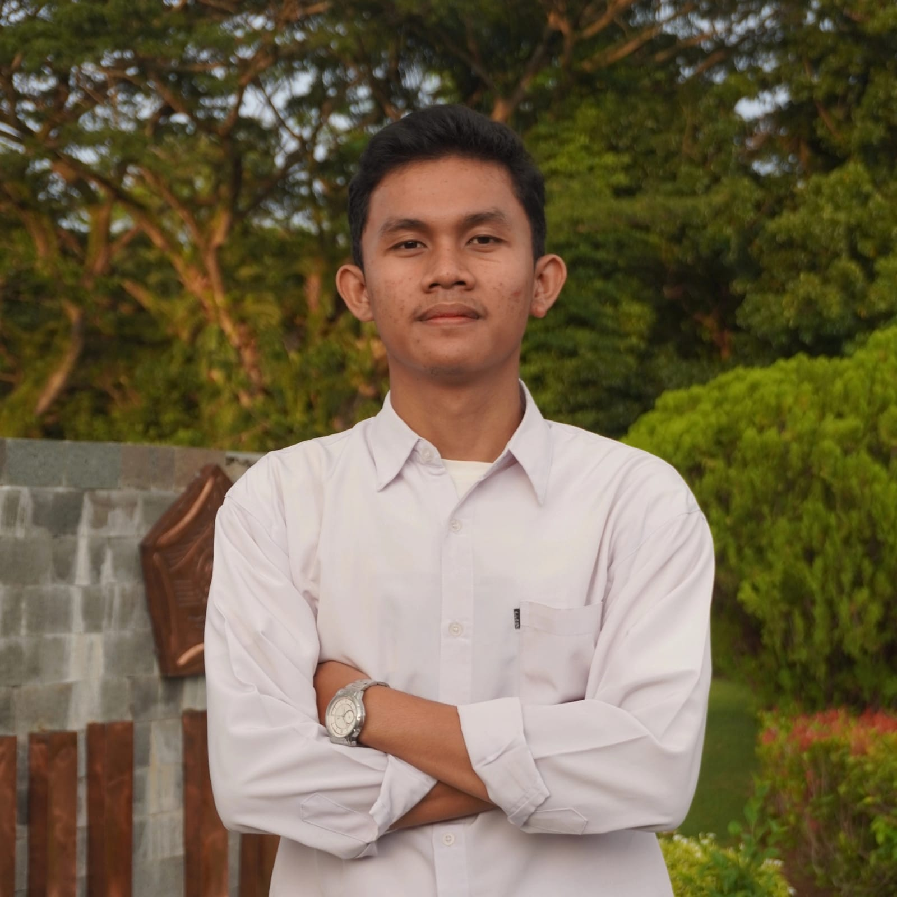

Teknisi Jaringan
PT. Telkom Akses
Melakukan instalasi, perawatan, dan perbaikan jaringan fiber optik. Serta melakukan troubleshooting jaringan dan berkoordinasi dengan tim lapangan untuk memastikan kualitas layanan optimal.

Mahasiswa Informatika Universitas Bengkulu (Semester 4)
Fokus pada inovasi Internet of Things (IoT), Cloud Computing, dan Artificial Intelligence (AI). Berpengalaman sebagai Direktur Utama UKM ERCOM dalam mengelola program kerja strategis.
PT. Telkom Akses
Melakukan instalasi, perawatan, dan perbaikan jaringan fiber optik. Serta melakukan troubleshooting jaringan dan berkoordinasi dengan tim lapangan untuk memastikan kualitas layanan optimal.
UKM Engineering Research Community (ERCOM)
Memimpin organisasi keilmuan dalam perencanaan program kerja strategis, mengarahkan kinerja departemen, serta menginisiasi program pengembangan anggota di bidang teknologi.
UKM Engineering Research Community (ERCOM)
Berkontribusi dalam riset teknologi dan berkolaborasi menyusun kegiatan berbasis IPTEK untuk peningkatan kapasitas anggota.
HIMATIF UNIB
Terlibat dalam program kaderisasi untuk pengembangan karakter mahasiswa dan pembinaan anggota.
Universitas Bengkulu
Fokus pada Cloud Computing, Kecerdasan Buatan (AI), dan Pemrograman. Aktif mengembangkan inovasi teknologi.
SMK N 1 Kota Bengkulu
Mempelajari dasar jaringan dan mengembangkan proyek sistem presensi berbasis biometrik (pengenalan wajah & sidik jari).